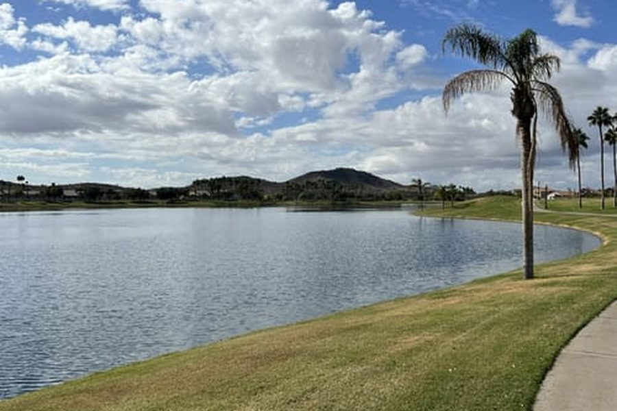

The warm-up · paved · easy
The Lake Spin
Glass-smooth pavement around both lakes, flat and fast. Coffee at the marketplace, a lap with the kids, a sunrise easy-day. Two easy miles up the spine to the water.
From the door · any bike, any age